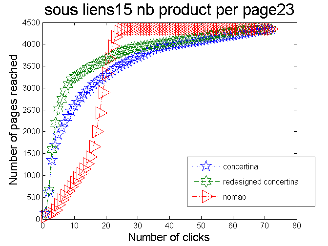
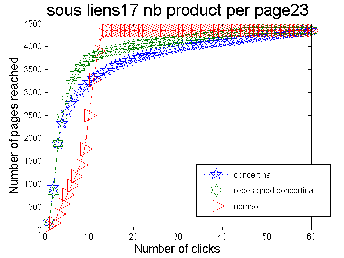
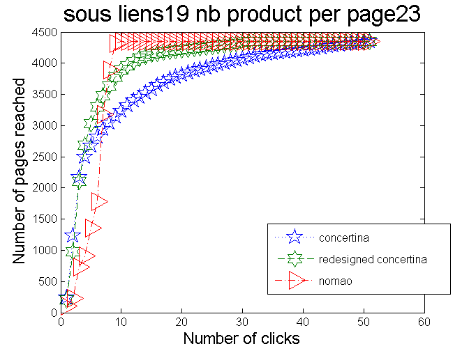
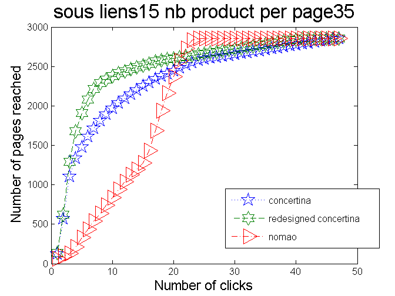
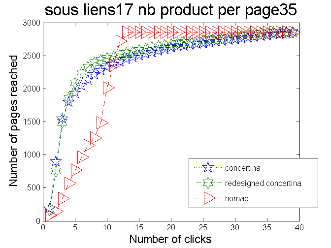
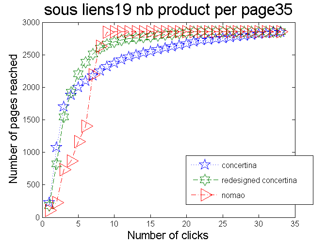

Comparing pagination efficiency in term of depth for different methodologies : Concertina, redesigned Concertina & Nomao
Contents
we want to reach all products with this size
nb_product = 100000
nb_product =
100000
Global parameters for all algorithms
total number of displayable references in pagination
Nlinks_beginning=15; Nlinks_end=20; % padding parameter Npadding=3; % the depth of click we want to explore depth_click=280; nb_product_per_page_array = [23,35];
Looping over each URL to access the efficiency of each methodology
we output a visualization only for one tenth of the URLs we skip the 7 first nb products because of the exalead limitation to 100 000 products
for i=1:length(nb_product_per_page_array) nb_product_per_page=nb_product_per_page_array(i); for Nlinks=Nlinks_beginning:2:Nlinks_end
Computing the distribution for the following URL :
disp(['Computing depth reachability for ' num2str(nb_product) ' product list']); disp(['Computing depth reachability for ' num2str(Nlinks) ' under links ']); disp(['Computing depth reachability for ' num2str(nb_product_per_page) ' products per page ']); % we here assume a number of 23 products per page Ntotal=round(nb_product./nb_product_per_page); % notice that relevant cases are Ntotal >> Nlink disp(['Number of pages to paginate : ' num2str(Ntotal)]); % affect the pagination computation methodology concertina_distrib=@(x)concertina_compute_pagination(x, Nlinks, Npadding, Ntotal); designed_concertina_distrib=@(x)designed_concertina_compute_pagination(x, Nlinks, Npadding, Ntotal); nomao_distrib=@(x)nomao_compute_pagination(x, Nlinks, Ntotal); % Computing the Concertina efficiency distribution=concertina_distrib(1); click=1; my_evolving_distrib=cell(depth_click,1); while (click <= depth_click) % links_to_add instantiation new_list=[]; for link=1:size(distribution,1) % we here compute the number of pages reachable at the variable click new_list = union(new_list,concertina_distrib(distribution(link))); if max(new_list)>Ntotal disp('We have a problem here') end end my_evolving_distrib{click}=new_list; distribution=new_list; % links_to_add=added_links+newlist % we here list the number of pages reached at click number click=click+1; end concertina_length_vector = cellfun(@length, my_evolving_distrib); % Computing the Redesigned Concertina efficiency distribution=designed_concertina_distrib(1); click=1; my_evolving_distrib=cell(depth_click,1); while (click <= depth_click) % links_to_add instantiation new_list=[]; for link=1:size(distribution,1) % we here compute the number of pages reachable at the variable click new_list = union(new_list,designed_concertina_distrib(distribution(link))); if max(new_list)>Ntotal disp('We have a problem here') end end my_evolving_distrib{click}=new_list; distribution=new_list; % links_to_add=added_links+newlist % we here list the number of pages reached at click number click=click+1; end redesigned_concertina_length_vector = cellfun(@length, my_evolving_distrib); % Computing the Nomao efficiency distribution=nomao_distrib(1); click=1; my_evolving_distrib=cell(depth_click,1); while (click <= depth_click) % links_to_add instantiation new_list=[]; for link=1:size(distribution,1) % we here compute the number of pages reachable at the variable click new_list = union(new_list,nomao_distrib(distribution(link))); if max(new_list)>Ntotal disp('We have a problem here') end end my_evolving_distrib{click}=new_list; distribution=new_list; % links_to_add=added_links+newlist % we here list the number of pages reached at click number click=click+1; end nomao_distrib_length_vector = cellfun(@length, my_evolving_distrib); % Displaying both results on a same graph % filtering the asymptote filter=(concertina_length_vector<Ntotal | nomao_distrib_length_vector<Ntotal | redesigned_concertina_length_vector<Ntotal); matrix=[concertina_length_vector(filter), redesigned_concertina_length_vector(filter), nomao_distrib_length_vector(filter)]; % storing the result results{i}=matrix; %displaying the results figure; createfigure(matrix,['sous liens' num2str(Nlinks) ' nb product per page' num2str(nb_product_per_page)]);
Computing depth reachability for 100000 product list Computing depth reachability for 15 under links Computing depth reachability for 23 products per page Number of pages to paginate : 4348
Computing depth reachability for 100000 product list Computing depth reachability for 17 under links Computing depth reachability for 23 products per page Number of pages to paginate : 4348
Computing depth reachability for 100000 product list Computing depth reachability for 19 under links Computing depth reachability for 23 products per page Number of pages to paginate : 4348
Computing depth reachability for 100000 product list Computing depth reachability for 15 under links Computing depth reachability for 35 products per page Number of pages to paginate : 2857
Computing depth reachability for 100000 product list Computing depth reachability for 17 under links Computing depth reachability for 35 products per page Number of pages to paginate : 2857
Computing depth reachability for 100000 product list Computing depth reachability for 19 under links Computing depth reachability for 35 products per page Number of pages to paginate : 2857
end end
Saving the results
save('global_results.mat');